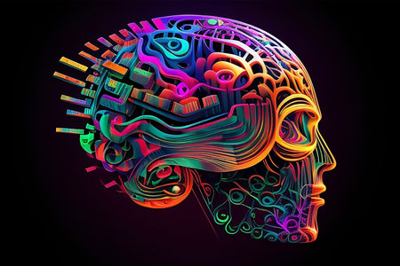

In the year 2008, a significant event unfolded in my childhood - the arrival of our first family PC, a Pentium Dual Core. At the age of 4 or 5, this technological marvel became my fascination. I recall spending hours next to my father, observing his work, or beside my mother as she played songs from those DVDs. Like any typical kid, my time was divided between playing games and experimenting with every clickable option, delving into the mysteries. No, I wasn't a prodigy hacking into government databases after a few online tutorials; I was just a curious child, exploring the vast possibilities that the PC presented.As the sands of time drifted away, the torch was passed from the family PC to a Sony laptop, yet the routine remained unchanged - games, exploration, and the occasional digital mischief.
Right from a young age, I was driven by curiosity about how things worked. The world seemed like a vast playground of mysteries waiting to be unraveled, and I was determined to explore every nook and cranny. Passionate about learning, I spent countless hours exploring the internet and engaging in conversations with anyone willing to share knowledge.
“Curiosity is the wick in the candle of learning.”
The most important person for these conversations was my uncle, a web developer. Whenever I had the chance to meet him, I would eagerly bombard him with questions. Whether it was day or night, weekday or holiday, my curiosity knew no bounds, and sometimes he would good-naturedly express a hint of exhaustion from my unending inquiries. Yet, his patient explanations and willingness to share his expertise became a cornerstone of my learning journey. It was never about grades or academic achievements; it was a hunger for understanding, a relentless pursuit of knowledge that fueled my days and nights.
Then came the turning point – a moment that would awaken the engineer within me. Both the laptop and the PC ceased to function, leaving me with more than just a broken screen. I wanted to understand the inner workings of these devices. I discovered a newfound passion for dismantling gadgets, an art I quickly realized I lacked expertise in.All the gadgets I ever dismantled were never assembled back in the way they were meant to be . My curious mind craved answers on how to fix and reassemble these complicate pieces correctly.
Interestingly, while many chose to study computer science formally or because of trends, I took a different path. Computer science wasn't a subject in the academic sense; it was a realm of fascination that I explored independently. I grew not only in knowledge but also in the ability to share and collaborate. The hunger for learning new things was not a solitary pursuit; it became a journey to grow with others. I found like-minded individuals, forming a community bound by the shared passion.